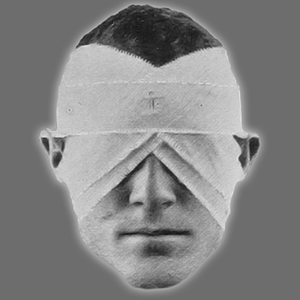

GÖLGEDE YÜRÜR MÜSÜN?
Hoş geldin. Burada bizimle olmandan mutluyuz. Pek çok ruh her gün duygularının çalkantılı rüzgârlarında savruluyor. Kendi varlığımıza ve tatminimize öylesine gömülüyoruz ki her öfke patlamasının, bıkkın iç çekişin ve düşüncesizce doğurup dünyaya saldığımız eylemin ardında yaşayan, nefes alan başka bir insan olduğunu çoğu zaman unutuyoruz.
Bu güzel dünyada yaşayan bir halk olarak yeteneğimizi empati kurma ve kardeşlerimizin diledikleri gibi yaşamasına gerçekten izin verme yeteneğimizi kaybettik. Sen kendi yoluna, ben kendi yoluma. O kadar çok kişi bencil ve kayıp ki artık hissedemiyor. Ruhun gerçek işkencesi budur: yaşamak ama başkasının hayatına ve seçimlerine karşı öfke ya da baş döndürücü bir heyecana kapılıp kendi hayatını hiç tanıyamamaktır. Biz grinin gölgesindekiler gerçek eşitlik istiyoruz. Başkalarının kendi hayatlarının çizdiği yolda yaşamasına izin vermek istiyoruz. Sen kendi yoluna, ben kendi yoluma.
Gerçekten The Grey yaşayanlar tarafsızdır. Başkalarının, doğduğumuz anda olmaya yazgılı olduğumuz sanat eserine dönüşmesine izin veririz. Yaşayacağımız hayatı yaşar, evrenimizin büyük güçleri karar verdiğinde ölürüz. Biri kendi eylemleriyle yargılanacaksa öyle olsun. Biri sevgisini başkalarına adayıp huzura katkıda bulunacaksa öyle olsun. Sen kendi yoluna, ben kendi yoluma.
Gerçekten özgür olma, başkaları kendi yolunda yaşarken kendi yolunda yaşama arzusu duyuyorsan gölgede bize katıl ve Interius'un duvarlarında öğretilerimizi öğren. The Grey ol; kendine ve dünyamıza gerçek eşitliği getir.

INTERIUS
Simgemiz, duvar adı verilen üç parçadan oluşur. Çünkü gölgedeyken, grinin gölgesindeyken kendi evinin içinde yaşarsın. Üç duvar, esenliğini tamamen çevrelemek için gereken asgari sayıdır. Materyalist değiliz ve ihtiyacımız olmayanı aramayız. Simgemizdeki duvarlar paraleldir; çünkü içlerinde güvenle yaşasak da dünyaya açık kalırlar. Başkalarının eylemlerine gözlerimizi kapatmayız. Başımızı kuma gömüp her şey yolundaymış gibi davranmayız. Dünyayı önümüzde açıldığı hâliyle kabul ederiz.
Son olarak merkez: Benlik. Interius'un duvarları içinde kendi evin sensin. Gölgenin gerçek kaynağı ruhundadır; yine de boş ve açıktır, hayatın sıkıntılarıyla ya da kaygılarıyla dolu değildir.
Yaşam biçimimizi simgelemekle birlikte Interius aynı zamanda grinin gölgesine giden yolu temsil eder. Interius'un duvarları, zincirimizin bir halkası olmak için öğrenilmesi gereken üç derse ayrılır.
Dünyaya dair dış algımız ve başkalarının bizi algılama biçimi.
Kendimiz olarak, kendimiz için yaşama biçimimiz.
☰ INANIS ☰
Denge. Gerçekten The Grey olmak.
Gölgede yürümek ister misin?